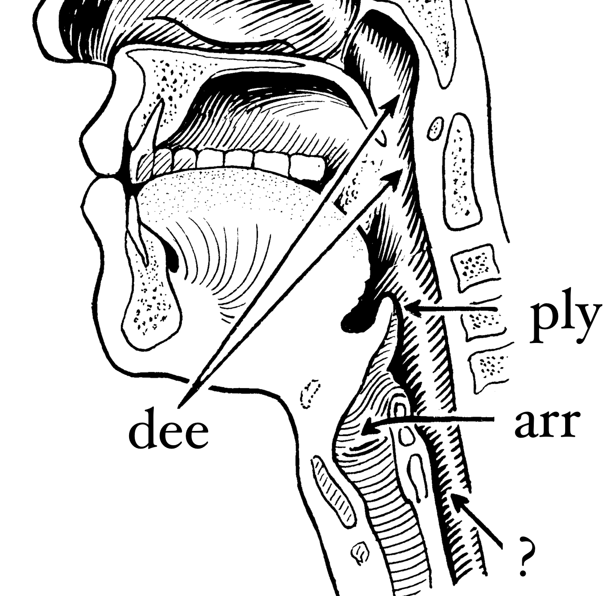

say -f input.txt -o output.wav
tl;dr
It’s ‘d-ply-r’ according to Hadley himself… maybe.
What does it sound like when your computer tries to pronounce R package names? Is this an accessibility issue?
Deep liar
Sometimes I hear a word being spoken and think ‘oh wait, is that how it’s actually pronounced?’
I know people struggle with pronouncing R package names. They’re often hard to parse.
Is {dplyr} ‘dee-ply-arr’ or ‘d’plier’? Is {data.table} ‘data table’ or ‘data-dot-table’?
Speak the truth
How does this affect users of assitive technology? VoiceOver is a macOS accessibility tool that helps people navigate their computers via audio. It reads text on a page. What happens when VoiceOver reads R package names?
I used the say command at the command line to test this out. For example, you can type say dplyr to get your machine to interpret and vocalise ‘dplyr’.
You can add flags to the command to read text from an input file (-f) and then store the audio output (-o):
I generated some audio of package names being read via say and embedded them in the sections below. These were:
- the tidyverse
- the top 20 downloads from CRAN
- 20 random CRAN packages
You can download all the text and audio files as a zip file (note that the audio is in .wav format).
Tidyverse
You can get the tidyverse packages with the tidyverse_packages() function from the {tidyverse} package.
Click for code
# Fetch the packages of the tidyverse
tidy_pkgs <- tidyverse::tidyverse_packages()
tidy_pkgs <- gsub("\n\\(>=", "", tidy_pkgs) # replace rogue characters
# Add terminal periods so that 'say' pauses between package names
tidy_pkgs <- paste0(tidy_pkgs, ".")
# Write the list to a text file
write.table(
tidy_pkgs,
file = "say_tidy.txt",
row.names = FALSE,
col.names = FALSE
)
# Get say command to read from text file and output an audio file
system("say -f say_tidy.txt -o say_tidy.wav")"broom" "cli" "crayon" "dplyr" "dbplyr" "forcats" "ggplot2" "haven"
"hms" "httr" "jsonlite" "lubridate" "magrittr" "modelr" "purrr" "readr"
"readxl" "reprex" "rlang" "rstudioapi" "rvest" "stringr" "tibble"
"tidyr" "xml2" "tidyverse"CRAN top 20
You can get the top 20 downloads from CRAN in the last month with the cran_top_downloads() function from the {cranlogs} package.
Click for code
# Fetch the top 20 downloaded packages from CRAN in past month
cran_top_pkgs <- cranlogs::cran_top_downloads(when = "last-month", count = 20)
# Add terminal periods so that 'say' pauses between package names
cran_top_pkgs$package <- paste0(cran_top_pkgs$package, ".")
# Write the list to a text file
write.table(
cran_top_pkgs$package,
file = "say_cran_top.txt",
row.names = FALSE,
col.names = FALSE
)
# Get say command to read from text file and output an audio file
system("say -f say_cran_top.txt -o say_cran_top.wav")"magrittr" "aws.s3" "aws.ec2metadata" "rsconnect" "rlang" "Rcpp" "dplyr"
"ggplot2" "ellipsis" "vctrs" "tibble" "digest" "glue" "pillar" "zeallot"
"backports" "stringr" "markdown" "fansi" "stringi"Random CRAN packages
You can get the full list of packages currently on CRAN with the CRAN_package_db() function in the {tools} package (part of base R).
Click for code
# Fetch and clean CRAN packages
cran <- tools::CRAN_package_db()
# Select random packages
set.seed(1337)
crandom_pkgs <- sample(cran$Package, size = 20)
# Add terminal periods so that 'say' pauses between package names
crandom_pkgs <- paste0(cran_rand_pkgs, ".")
# Write the list to a text file
write.table(
crandom_pkgs,
file = "~/Desktop/say_cran_random.txt",
row.names = FALSE,
col.names = FALSE
)
# Get say command to read from text file and output an audio file
system("say -f ~/Desktop/say_cran_random.txt -o ~/Desktop/say_cran_random.wav")"NScluster" "nlnet" "Bivariate.Pareto" "lisa" "homtest" "glarma" "ttdo"
"flock" "equSA" "coreCT" "WEE" "xtable" "shinyKGode" "DiffNet" "WGCNA"
"aqfig" "Voss" "tidymv" "gogarch" "erp.easy"Results
Obviously there’s a lot of subjectivity, but what was strange to your ears? To my southern English ears, it seems like there were a few patterns:
- English word pronounced as expected: {haven}, {broom} and {glue}
- American English: {crayon} (‘crain’)
- unexpected English parsing: {lubridate} (‘loobridot’)
- the trouble with ‘tidy’: {tidyr} (‘tid-ear’ instead of ‘tidy-arr’) and {tidyverse} (‘tid-a-verse’ instead of ‘tidy-verse’)
- the trouble wirh ‘r’: {rvest}, {rlang} and {rstudioapi} (‘r’ not pronounced as ‘arr’ in any of these)
- the trouble with ‘read’: {readr} and {readxl} (‘reed’ becomes ‘ree-add’ because the whole thing is being read as one word)
- spelled out: {vctrs} (rather than ‘vectors’ in a New Zealand accent)
- what the actual heck: {ttdo} (I think it tries to pronounce the whole thing)
And what about {dplyr}? Well, it was something like ‘d’pleur’. I’m pretty sure that’s not quite right.
Of course, there are other text-to-speech engines, which may interpret and synthesise words differently. For example, espeak vocalises {dplyr} as ‘deepler’ which is definitely not right.
If you’re a user of assistive technology, does the way the machine reads the package names impact your pronunciation of the package name?
Environment
Session info
Last rendered: 2023-08-11 23:35:18 BSTR version 4.3.1 (2023-06-16)
Platform: aarch64-apple-darwin20 (64-bit)
Running under: macOS Ventura 13.2.1
Matrix products: default
BLAS: /Library/Frameworks/R.framework/Versions/4.3-arm64/Resources/lib/libRblas.0.dylib
LAPACK: /Library/Frameworks/R.framework/Versions/4.3-arm64/Resources/lib/libRlapack.dylib; LAPACK version 3.11.0
locale:
[1] en_US.UTF-8/en_US.UTF-8/en_US.UTF-8/C/en_US.UTF-8/en_US.UTF-8
time zone: Europe/London
tzcode source: internal
attached base packages:
[1] stats graphics grDevices utils datasets methods base
loaded via a namespace (and not attached):
[1] htmlwidgets_1.6.2 compiler_4.3.1 fastmap_1.1.1 cli_3.6.1
[5] tools_4.3.1 htmltools_0.5.5 rstudioapi_0.15.0 yaml_2.3.7
[9] rmarkdown_2.23 knitr_1.43.1 jsonlite_1.8.7 xfun_0.39
[13] digest_0.6.33 rlang_1.1.1 evaluate_0.21 Reuse
CC BY-NC-SA 4.0